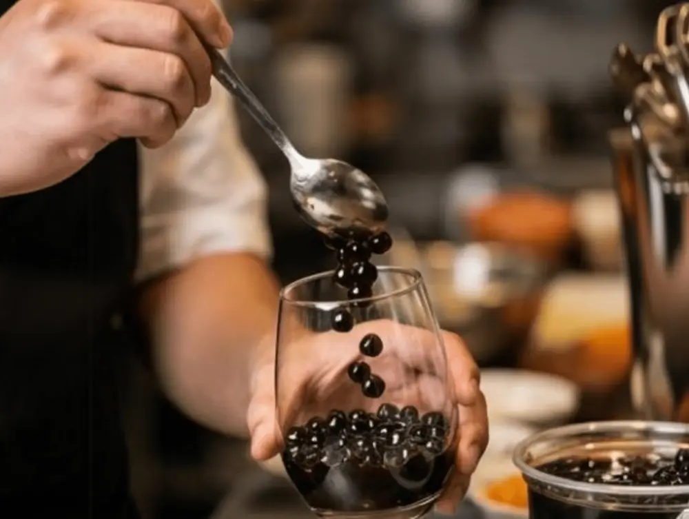
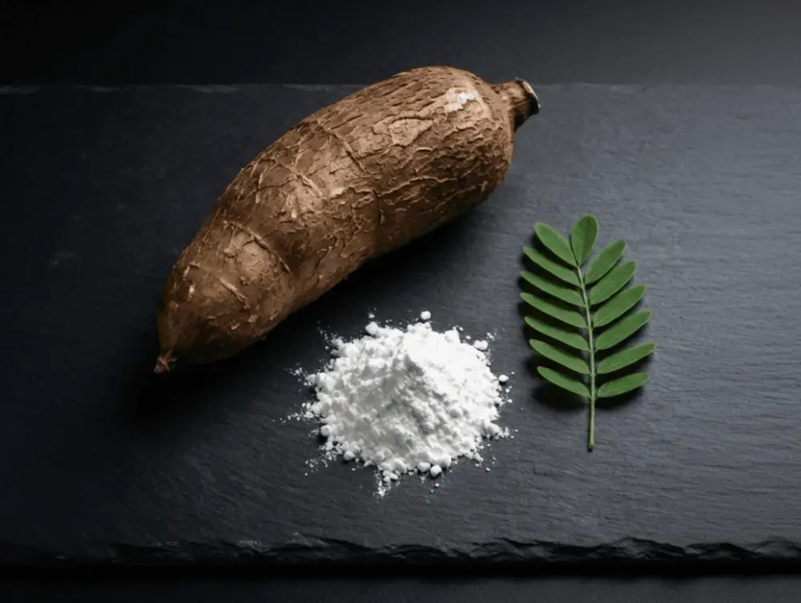
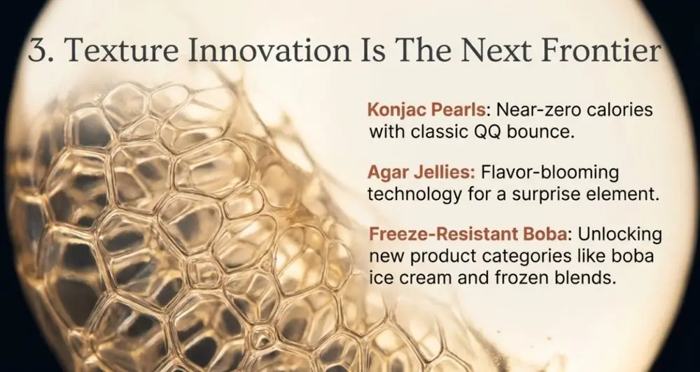
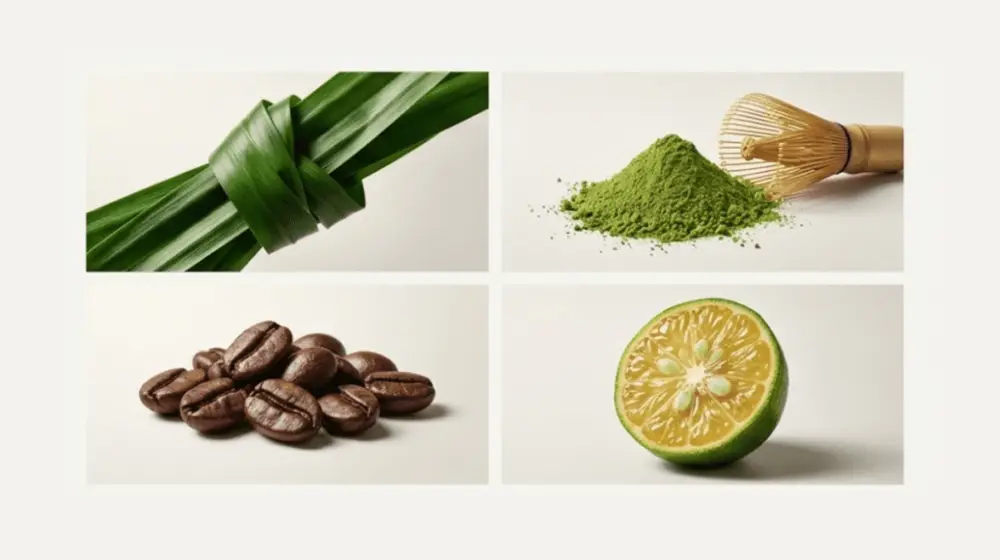

Articles / Tips & trends
Bubble Tea Ingredient Trends 2026: Innovations and Future Market Demands
2026-01-06 · Industry Trends, Industry Trends

I’ve spent the better part of two decades watching flavor trends migrate across continents, but what’s happening in bubble tea right now reminds me of those early days covering Thai cuisine’s American breakthrough—except this time, the pace is exponential. When I first encountered brown sugar boba in Taipei’s night markets a decade ago, the drink was a hyper-local phenomenon. Today, it’s part of a $4.3 billion global industry that’s rewriting the rules on ingredient innovation faster than any category I’ve covered.
Here’s what strikes me about 2026’s emerging trends: we’re not just seeing new flavors anymore. We’re witnessing a fundamental shift in how bubble tea ingredients are conceptualized, formulated, and positioned in the market. The innovation happening in R&D labs—from functional pearls that don’t need refrigeration to plant-based cream foams with genuine dairy mouthfeel—signals that bubble tea has officially graduated from trend territory into serious food science innovation.
The Clean Label Movement Hits Bubble Tea
“Consumers want to see ingredient lists they can pronounce,” Michelle Chen, founder of Brooklyn’s Miru Tea, told me recently. “But they’re not willing to sacrifice taste or texture. That’s the challenge every supplier is racing to solve.”
She’s right. The clean label movement that transformed packaged foods is now reshaping bubble tea ingredients. Walk into any major trade show—whether it’s the National Restaurant Association Show or IFT FIRST—and you’ll find tapioca pearl manufacturers showcasing formulations free from artificial colors, preservatives, and modified starches.
What makes this particularly interesting is how ingredient suppliers are solving the technical challenges. Traditional tapioca pearls rely on modified starches for that signature QQ texture (the Taiwanese term for the perfect chewy bounce). Removing these additives while maintaining texture consistency was considered nearly impossible three years ago. Now? Multiple suppliers have cracked the code using combinations of native cassava starch, natural gums, and carefully controlled gelatinization processes.
The implications for operators are significant. YenChuan’s customization services are seeing increased demand for clean label formulations, particularly from chains looking to differentiate in competitive urban markets. Expect to see “no artificial ingredients” callouts becoming standard menu language by mid-2026.


Functional Ingredients: Beyond the Buzz
Here’s where bubble tea gets genuinely innovative. The functional beverage category—think collagen water, immunity shots, adaptogen lattes—is bleeding into bubble tea in ways that would’ve seemed absurd five years ago. But operators are taking this seriously, and the numbers back them up.
Jessica Liu, beverage director for a 23-unit California-based bubble tea chain, shared her perspective: “We tested collagen-infused tapioca pearls last quarter. Sales beat our projections by 40%. Customers, especially women 25-40, are actively seeking functional benefits even in indulgence categories.”
The ingredient innovation happening here isn’t just collagen, though that’s the most visible trend. I’m seeing R&D work around:
Protein-enriched pearls using plant-based proteins (pea, rice, chickpea) that add 8-12g protein per serving without compromising texture. These are particularly popular for post-workout positioning, and several operators are testing “fitness-focused” boba concepts that lean heavily into this benefit.
Prebiotic fiber integration through inulin and resistant starches that support gut health. Research from Stanford Food Institute suggests consumers are willing to pay 15-20% premiums for digestive health benefits when clearly communicated. Bubble tea, with its textural variety, provides an ideal delivery vehicle.
Adaptogen-infused syrups featuring ashwagandha, lion’s mane, and reishi mushroom extracts. Yes, this sounds very Los Angeles—because it is. But the trend is spreading faster than I expected, with operators in Chicago, Austin, and even Miami testing adaptogen menu sections.
What’s particularly clever about these functional innovations is how they’re being positioned. Rather than overwhelming customers with health claims, smart operators are creating distinct menu categories—”Wellness Wave,” “Power Boost,” “Zen Series”—that signal benefits without feeling preachy. The new products from innovative suppliers are making this segmentation increasingly achievable at scale.

Texture Innovation: The Next Frontier
If you think tapioca pearls and popping boba are the end of the texture story, you’re missing what’s about to explode. The most exciting ingredient development I’m tracking for 2026 involves entirely new textures that don’t fit existing categories.
Konjac-based alternatives are gaining serious traction. Made from konjac root (the same plant used in shirataki noodles), these pearls offer near-zero calories while delivering comparable texture to traditional tapioca. For operators facing increasing scrutiny around sugar and calorie content, this is a game-changer. Several major chains are testing konjac formulations that can withstand bottling processes—critical for the ready-to-drink segment.
Agar-based jellies with delayed release represent genuinely novel innovation. These ingredients remain solid at room temperature but “bloom” with flavor when they hit body temperature in your mouth. Think of it as the bubble tea equivalent of flavor encapsulation technology used in fine dining. Early adopters are using these for premium signature drinks where the surprise element justifies higher price points.
Freeze-resistant formulations are solving a long-standing operational challenge. Traditional tapioca pearls crystallize when frozen, limiting their use in blended drinks and frozen desserts. The new freeze-resistant boba maintains texture integrity even after freezing, opening up entirely new product categories—think boba ice cream bars, frozen boba pops, and blended drinks that don’t compromise on texture.


Sustainability Meets Premium Positioning
The sustainability conversation in bubble tea ingredients has evolved from “nice to have” to “table stakes”—particularly for operators targeting Gen Z consumers who are willing to walk out if sustainability credentials don’t meet their standards.
What’s changed recently is how ingredient innovation is making sustainability claims more credible and verifiable. Upcycled ingredients—products made from food that would otherwise go to waste—are showing up in bubble tea formulations. I’ve seen syrups made from rescued produce, tapioca pearls incorporating cassava processing byproducts, and powders utilizing spent grains from brewing operations.
Packaging innovation is equally critical. The industry is moving beyond just biodegradable cups (which everyone offers now) to focus on the ingredient supply chain itself. Bulk concentrate systems that reduce transportation weight, dissolvable portion packets that eliminate secondary packaging, and refillable syrup cartridges are all trending upward.
McKinsey research indicates that 67% of beverage consumers under 30 actively seek out brands demonstrating supply chain transparency. For bubble tea operators, this means ingredient suppliers who can provide detailed sourcing documentation and carbon footprint data will have a competitive advantage. YenChuan’s approach to transparency reflects this shift toward supply chain storytelling.
Regional Flavor Localization
One of my favorite aspects of covering bubble tea has been watching how quickly operators adapt global trends to local palates. The ingredient innovation enabling this localization is sophisticated and often goes unnoticed by consumers.
In 2026, expect to see ingredient suppliers offering regional flavor profiles that go far beyond basic customization. We’re talking about syrup formulations calibrated for water hardness differences between cities, powder blends adjusted for ambient temperature variations, and pearls formulated to complement regional tea preferences.
For example, Southeast Asian markets are driving demand for pandan, durian, and calamansi flavor profiles that perform consistently despite tropical humidity. European operators want ingredients that pair well with ceremonial-grade matcha and single-origin tea leaves. North American chains are requesting formulations that integrate with cold brew coffee and nitro systems.
This level of customization was impossible three years ago. Now, ingredient manufacturers are using predictive flavor modeling and rapid prototyping to deliver market-specific formulations in weeks rather than months. For multi-unit operators expanding into new territories, this means faster local adaptation without sacrificing brand consistency.


The Alcohol Integration Opportunity
Here’s a trend that surprises many operators: the convergence between bubble tea ingredients and adult beverage programs. Alcohol-free alcoholic flavors are just the beginning.
Several innovative operators are creating hybrid concepts—bubble tea shops that transition into cocktail bars after 6 PM, using the same ingredient base. This requires specialized formulations: syrups with balanced acidity for alcohol pairing, pearls that maintain texture in alcohol-based liquids, and powders that don’t separate when mixed with spirits.
UC Davis Food Science research on flavor pairing in mixed beverages is informing new product development in this space. Ingredient suppliers are creating “mixology-ready” versions of popular bubble tea components—think bourbon barrel-aged brown sugar syrup, tequila-compatible fruit pearls, and bitters-infused tapioca.
The business case is compelling: operators can command 40-60% higher margins on alcohol-integrated menu items while utilizing existing ingredient inventory. For locations in mixed-use urban areas with evening foot traffic, this represents significant revenue expansion without requiring separate supply chains.
What This Means for Operators in 2026
So what should bubble tea operators take away from these ingredient trends? Three things stand out:
First, ingredient innovation is becoming a competitive differentiator. The days when any shop could thrive just by offering milk tea and basic tapioca are ending in mature markets. Operators who partner with suppliers capable of custom formulation and rapid product development will capture premium positioning and customer loyalty.
Second, functional benefits are no longer optional in premium segments. Consumers—particularly those willing to pay $7+ per drink—expect more than taste. They want clean labels, functional ingredients, and transparency. Your ingredient choices communicate brand values whether you intend them to or not.
Third, supply chain relationships matter more than ever. The ingredient innovations coming in 2026 require technical partnerships, not just vendor transactions. Finding suppliers who invest in R&D, offer customization services, and can scale with your growth will determine who wins in increasingly competitive markets.
The bubble tea ingredient landscape is experiencing its most dynamic period since the category’s inception. For operators willing to explore beyond commodity ingredients and embrace innovation, 2026 offers extraordinary opportunities to differentiate, command premium pricing, and build brands that resonate with increasingly sophisticated consumers.
Frequently Asked Questions (FAQ)
The clean label trend refers to bubble tea ingredients using natural, consumer-recognizable components while avoiding artificial colors, preservatives, and modified starches. Suppliers now maintain the signature QQ chewy texture using combinations of native cassava starch, natural gums, and carefully controlled gelatinization processes without artificial additives.
Key functional innovations for 2026 include collagen-infused tapioca pearls, plant-based protein pearls (adding 8-12g protein per serving), prebiotic fiber integration for gut health, and adaptogen-infused syrups featuring ashwagandha and lion’s mane. These functional ingredients allow consumers to enjoy health benefits while indulging in their favorite drinks.
Konjac pearls are boba alternatives made from konjac root that offer near-zero calories while delivering comparable texture to traditional tapioca pearls. They are ideal for health-conscious consumers concerned about sugar and calorie content, and certain formulations can withstand bottling processes for ready-to-drink products.
The bubble tea industry achieves sustainability through upcycled ingredients in syrups and pearls, biodegradable packaging, bulk concentrate systems that reduce transportation carbon footprint, and comprehensive supply chain transparency. Research shows 67% of consumers under 30 actively seek brands demonstrating supply chain transparency.
Freeze-resistant boba pearls are specially formulated to maintain texture integrity after freezing. Unlike traditional tapioca pearls that crystallize when frozen, these can be used in blended drinks, boba ice cream bars, frozen boba pops, and other innovative products, significantly expanding bubble tea product categories.
Sources & References
- Stanford Food Institute Research — Consumer behavior insights on functional beverages
- UC Davis Food Science Department — Flavor pairing and beverage formulation research
- Institute of Food Technologists (IFT) — Clean label innovation and food technology trends
- McKinsey Food & Agriculture — Supply chain transparency and consumer preference data
- Upcycled Food Association — Sustainability standards and ingredient innovation
About the Author
Marcus Chen is a Senior Content Strategist at YenChuan, specializing in beverage innovation and ingredient trends. With 12 years of experience in the bubble tea supply industry, he brings deep insights into how ingredient innovation shapes consumer experiences and operator profitability. Marcus believes the most successful bubble tea concepts will be those that balance innovation with authenticity—using cutting-edge ingredients to honor traditional craftsmanship rather than replace it.
Connect with Marcus on LinkedIn.
Ready to Elevate Your Bubble Tea Business?
Whether you’re launching a new boba concept or scaling an existing operation, the quality and innovation of your ingredients makes all the difference. YenChuan has been crafting premium bubble tea ingredients since 1988—from our signature tapioca pearls to custom formulations that set your menu apart and position your brand for the trends shaping 2026.
Our R&D team works directly with operators to develop functional ingredients, clean label formulations, and regionally adapted flavors that resonate with today’s sophisticated consumers. From concept to cup, we’re your partner in bubble tea excellence.
Let’s discuss how we can support your growth and innovation strategy. Book a consultation with our team →